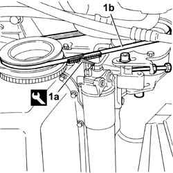
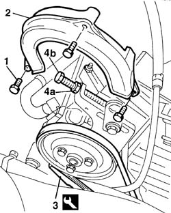

1092C12 power steering pump drive belt - adjust tension
- Path
- Procedures > 10 ENGINE > 1092 ENGINE COMPONENT MISCELLANEOUS DRIVES > 1092C POWER STEERING/SELF-LEVELLING SUSPENSION PUMP DRIVE > 1092C12 power steering pump drive belt - adjust tension
- Kind
- repair procedure (removal / refitting; the operation number is the code)
- Applies to
- all engines; all production periods
- Interactive page
- https://sloeber94.github.io/elrnDB-fDbl/en/#/2584329
Applies to: all engines; all production periods
Position the vehicle on a lift.
7055B54 under-engine guard - r r
1. Use tool (1a) and check that the tension of new belt (1a) is within the recommended values.
 | Name | Country |
|---|---|---|
1a | Torque wrench | 1.895.762.000 |
 | Measurement | Value | |
|---|---|---|---|
- | Tension (daN) | 36 ÷ 45 | |
New belt (-) | - | ||
| Measurement | Value | |
|---|---|---|---|
- | Tension (daN) | 23 ÷ 30 | |
Used belt (-) | - | ||

Applies to: all engines; all production periods
1. Undo the retaining bolts.
2. Remove the power steering pump belt guard.
3. Use a dynanometer to check fitted belt tension.
| Name | Country |
|---|---|---|
3 | Torque wrench | 1.895.762.000 |
| Measurement | Value | |
|---|---|---|---|
- | Tension (daN) | 36 ÷ 45 | |
New belt (-) | - | ||
| Measurement | Value | |
|---|---|---|---|
- | Tension (daN) | 23 ÷ 30 | |
Used belt (-) | - | ||
if the reading is not as specified, adjust belt tension.
4. Undo the nut (4a) and bolt (4b) of the adjustment and tensioning device, thus releasing the belt.
Tighten belt tension by readjusting the bolt and nut.
Use the dynanometer to check that the reading is within the specified range.

Applies to: all engines; all production periods
If the value measured is not within the recommended limits, carry out the tensioning operation, loosening the power assisted steering pump fastenings.
Act on the micrometric screw and correct the belt tension until it is within the permissible limits.
When the operation is completed, tighten the bolts fixing the power assisted steering pump to torque.
 | Fastening | Component | Ø | Value (daNm) |
|---|---|---|---|---|
- | Bolt | POWER STEERING PUMP | M10 x 1.25 | (Slot) 5 |
| Fastening | Component | Ø | Value (daNm) |
|---|---|---|---|---|
- | Bolt | POWER STEERING PUMP | M10 x 1.25 | (Fulcrum) 5 |
7055B54 under-engine guard - r r
Remove the car from the lift.
Applies to: all engines; all production periods
Fit the power steering belt guard and tighten the bolts.
Topics linked from this page (1)
Topics that link to this page (7)
- 0010K20 20,000km service coupon, emission control version
- 1016C10 cylinder head - r + r and replace gasket
- 1072C10 exhaust manifold - r + r and replace seal
- 1088C10 water pump - r + r
- 1092C10 power steering and/or self-levelling suspension pump drive belt - r + r
- 4130B20 power steering pump r r
- 5530A10 alternator - r+r